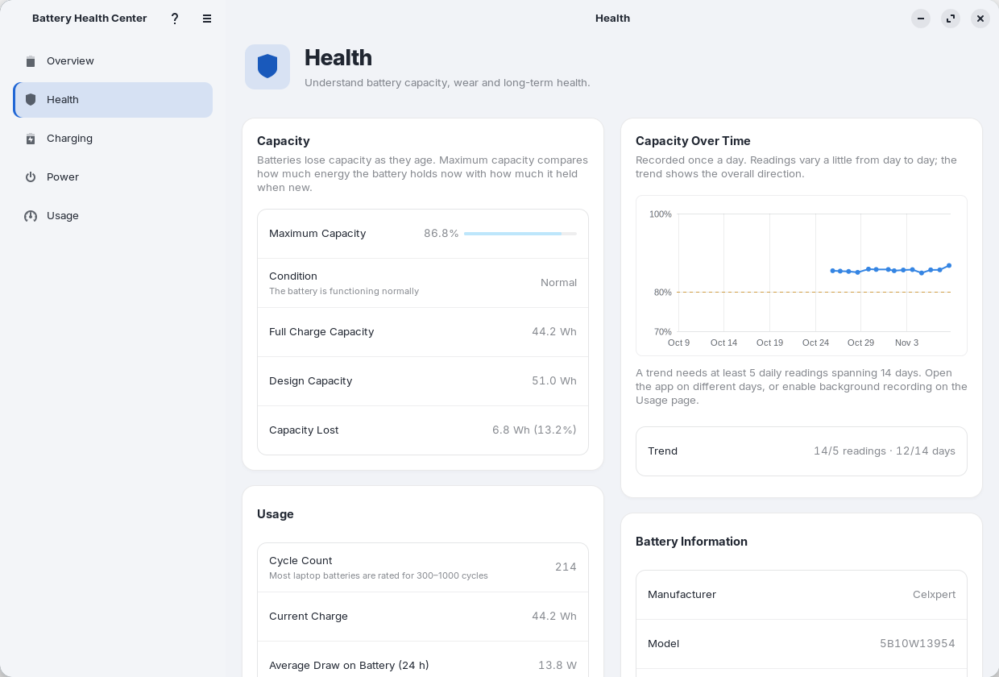
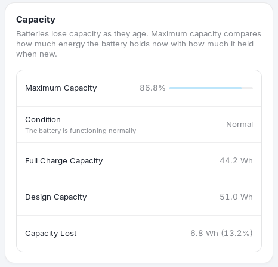
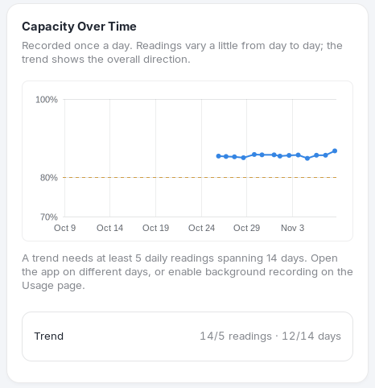
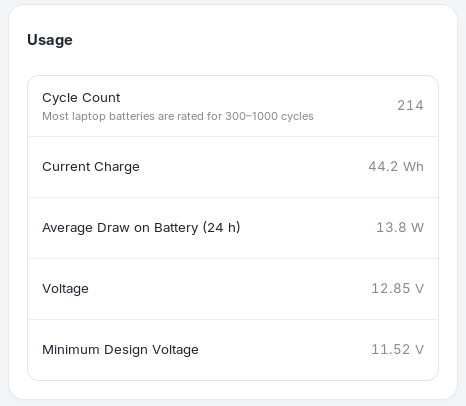
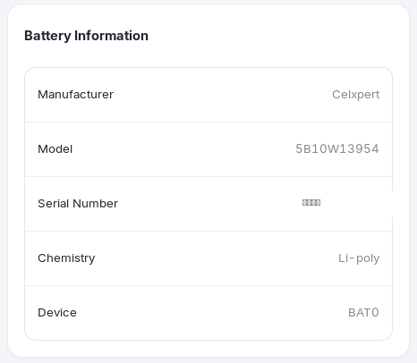
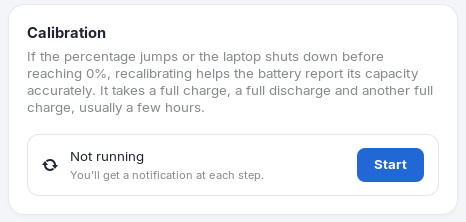
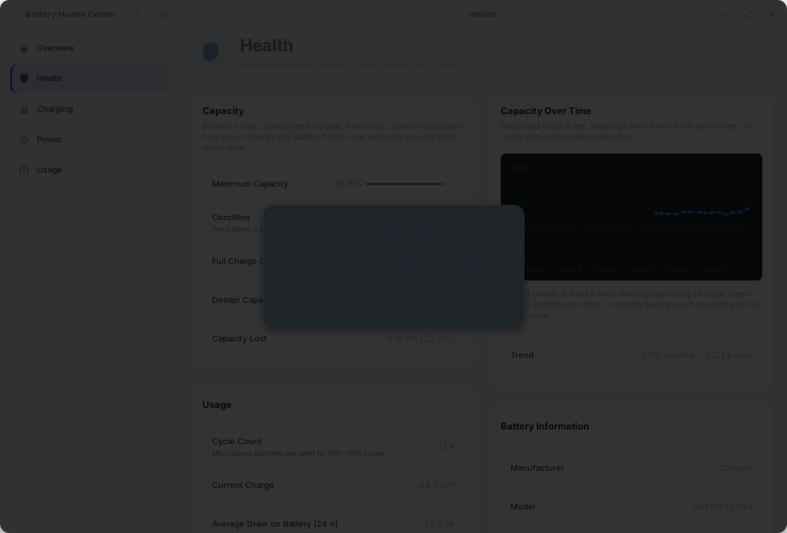

Health
Every battery loses a little capacity with age. The Health page measures how much, shows how it has changed over time, and tells you when it is worth doing something about it.

Capacity#

- Maximum Capacity is the energy the battery holds when full now, as a percentage of what it held when it was new, shown with a level bar.
- Full Charge Capacity is that energy in watt-hours (Wh). Design Capacity is what the manufacturer rated the battery for when new. Capacity Lost is the difference in Wh and in percent.
- Condition turns the number into a plain word:
| Condition | Maximum capacity | What it means |
|---|---|---|
| Normal | 80% or more | The battery is functioning normally. |
| Worn | 60% to 80% | The battery holds less charge than when new but works normally. |
| Service Recommended | Under 60% | The battery holds significantly less charge; consider replacing it. |
Note. Some drivers report charge in µAh (charge-based) and others in µWh (energy-based). The app supports both.
Capacity over time and the trend#

The app records the maximum capacity once a day (the first time it runs that day) and plots it. Readings wobble a little from day to day, so the line is the direction that matters, not any single point.
After at least 5 daily readings spanning at least 14 days the Trend row switches from progress ("3/5 readings · 6/14 days") to a result:
- N% per month, the rate at which capacity is falling, and Reaches 80%: the month and year the battery is projected to cross 80% ("Around March 2028").
- Not declining when the line is flat or rising.
- Already below 80% when it has already crossed.
A battery that does not report capacity data shows "This battery does not report capacity data, so a health trend cannot be calculated."
Tip. Turn on Record History in the Background on the Usage page so the daily reading is saved even on days you never open the window.
Usage#

- Cycle Count is how many full charge-and-discharge equivalents the battery has been through. Most laptop batteries are rated for 300–1000 cycles.
- Current Charge is the energy in the battery now, in Wh.
- Average Draw on Battery (24 h) is the average power the laptop used while on battery over the last day. It appears once there is enough history.
- Voltage and Minimum Design Voltage: the present voltage and the lowest voltage the battery is designed to reach.
Rows the battery does not report are shown as "Not reported", and rows with no history yet say "No data yet".
Battery information#

Manufacturer, model, serial number, chemistry (for example Li-ion or Li-poly) and the device name Linux uses
(BAT0). It is handy for warranty claims and when you shop for a replacement.
Calibration#

Battery gauges estimate the charge. When the percentage jumps around, or the laptop shuts down before it reaches 0%, the estimate has drifted. Calibration lets the battery relearn its true capacity. It takes a full charge, a full discharge and another full charge, usually a few hours in total, and you can use the laptop normally in between.
- Choose Start and confirm Start Calibration?. If the laptop is not full, plug it in; the card shows "Step 1 of 3: Charge to 100%".
- When the battery is full you get the notification Calibration: Unplug Your Laptop. Unplug the charger and use the laptop until the battery is nearly empty (5%). The card shows "Step 2 of 3" with the current percentage.
- At 5% you get Calibration: Plug In Now. Connect the charger and let it charge to 100% again.
- You get Calibration Complete. The battery's capacity reading has been recalibrated, and your charge limit is back on.

Careful. During calibration the charge limit is lifted so the battery can reach 100%. Choose Cancel on the card at any time to stop; your limit returns.
Hardware. Calibration needs a battery that reports its charge accurately. It is a fix for a wrong reading, not for a battery that has genuinely worn out: if the maximum capacity stays low afterwards, that number is the truth.